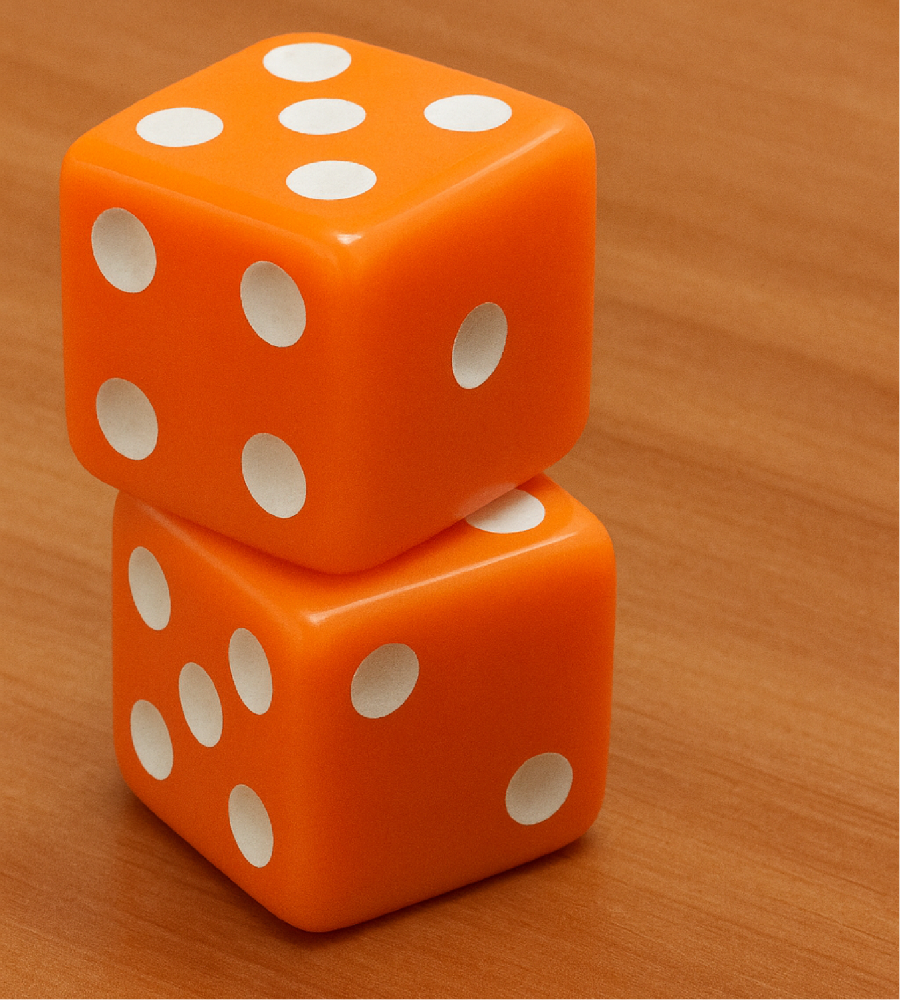

About me
I am a fourth year ECE Ph.D. student at Carnegie Mellon University. I’ve been very fortunate to be a part of the Geometry Collective and to be advised by Keenan Crane. In summer 2023 and 2024, I interned at Adobe, where I had the pleasure of working with Alec Jacobson and Qingnan Zhou on physics-related problems.
Previously, I graduated from Sharif University of Technology with a B.S. in Computer Engineering and a minor in Mathematics. A copy of my CV can be found here.
Research
My research interest broadly is geometry processing and computer graphics. I find it rewarding to learn about Differential Geometry and Topology and to apply that knowledge to the discrete domain when possible.
Before doing geometry, I used to do Computational Imaging; where I got to learn some optics and acoustics and did some physical experiments. In my undergraduate years, I worked on Graph Theory and Statistics problems.
Publications

Putting Rigid Bodies to Rest
Hossein Baktash, Nicholas Sharp, Qingnan Zhou, Keenan Crane, Alec Jacobson
ACM Trans. on Graph. (2025)
Project page, Dice rolling video, Supplementary files

Computational Imaging using Ultrasonically-Sculpted Virtual Lenses
Hossein Baktash, Yash Belhe, Matteo Giuseppe Scopelliti, Yi Hua, Aswin C Sankaranarayanan, Maysamreza Chamanzar
ICCP 2022

Some Results on Dominating Induced Matchings
S Akbari, H Baktash, A Behjati, A Behmaram, M Roghani
Graphs and Combinatorics 38 (3), 73
Misc
I’ve been a member of the CMU pool team and club. Back in Iran, I was lucky to be a part of Sharif University’s Mountaineering Club family.